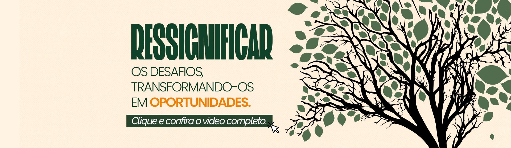

Bem-vindo à SATC
Colégio Satc, ao seu lado educando gerações.
Preparamos os nossos alunos para a vida. Venha você também fazer parte do maior Colégio de Criciúma.
Há mais de 65 anos construindo o saber
A inovação e a ação social fazem parte do DNA da Satc desde a sua fundação, em 1959.
Uma instituição filantrópica, criada para ser o braço assistencial da Indústria Carbonífera do sul de Santa Catarina, a instituição se tornou referência na formação técnica de profissionais, e também na formação de cidadãos comprometidos com a sociedade.
A Satc atua na formação 360°, preparando seus alunos para se tornarem cidadãos com conhecimento científico, tecnológico e cultural.
A instituição atua da Educação Infantil até a Pós-graduação, sempre inovando em suas metodologias de ensino.
Para isso, dispõe de uma infraestrutura focada na aprendizagem completa de seus alunos e colaboradores: 60 laboratórios, 85 salas de aulas, complexo esportivo, áreas verdes, além de profissionais alinhados com o mercado.
Desde 2008, a Satc é certificada com a ISO 14001, que determina seu comprometimento com a redução de impactos ambientais no processo interno.
Também atua na área da pesquisa científica e serviços laboratoriais, trazendo novas perspectivas de desenvolvimento sustentável com o Centro Tecnológico Satc.
© 2025 Pedro Henrique do Nascimento Urbano - Todos os direitos reservados.